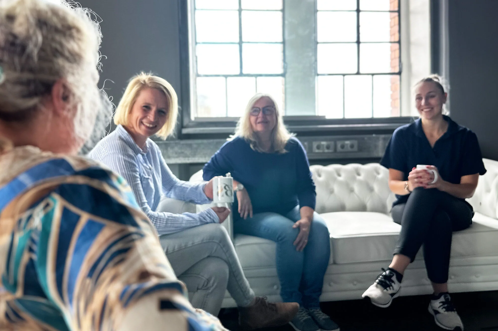

Ich war noch nirgends besser versorgt.
„Das ist nicht mein erster Pflegedienst, aber es wird mein letzter bleiben. Nirgendwo sonst geht man so auf mich ein und kümmert sich auch um meine kleinen Wünsche, danke.“
Wir glauben: Gute Pflege ist niemals „von der Stange“.
Denn das Beste sollte für das Wohl unserer Liebsten eine Selbstverständlichkeit sein, deshalb sind wir nicht nur mit Verstand sondern auch mit Herz bei der Sache! Vertrauen Sie auf Jahre der Erfahrung.
So individuell wie Sie sind auch unsere Lösungsansätze. Lassen Sie sich von unseren Fachkräften beraten.
Wir sind der ambulanter Pflegedienst in Karlsruhe bei dem Sie alle Leistungen unter einem Dach finden.
Gerne beraten wir Sie zu den Themen ambulante Pflege oder Kurzzeitpflege. Weiter können Sie sich gerne über unsere 24-Stunden Pflege bei Ihnen Zuhause oder in unseren ambulant betreuten Wohngemeinschaften informieren lassen.
Machen Sie sich gerne selbst einen Eindruck.

2013 gründete Britta Schmid, die zuvor selbst als examinierte Krankenschwester in einem ambulanten Dienst und einem Pflegeheim arbeitete, das Unternehmen BS ambulanter Pflegedienst. Ihr Ziel war es, die besten Eigenschaften eines Pflegeheims und der ambulanten Pflege Zuhause zu vereinen. Keine zum Überlaufen gefüllten Tourenpläne, bei denen es keine Zeit gab Mensch zu sein. Die Pfleger und Pflegerinnen sollten Zeit haben, sich auf medizinischer und sozialer Ebene mit den Kunden auseinanderzusetzen. Also beschloss sie ein Unternehmen nach ihren eigenen Vorstellungen und Werten zu gründen. Es entstand BS ambulanter Pflegedienst!
Mehr„Das ist nicht mein erster Pflegedienst, aber es wird mein letzter bleiben. Nirgendwo sonst geht man so auf mich ein und kümmert sich auch um meine kleinen Wünsche, danke.“
„Ich hatte lange Zeit nicht das Gefühl irgendwo dazu zu gehören aber hier habe ich Anschluss und ein Zuhause gefunden.“
„Ich wollte nicht von Zuhause weg, weil ich dachte, sobald ich so eine riesige Einrichtung komme, bin ich abgeschrieben. In der kleinen Wohngemeinschaft bin ich jetzt aber zufrieden. Ich kenne alle mit Namen und habe sogar schon neue Freunde getroffen.“
Voll-/ Teilzeit / Minijob
Gutes tun und gut verdienen
Ein Job, der zu deinem Leben passt
Für uns zählt das Herz für die Menschen
Wir finden für alle den richtigen Einsatz